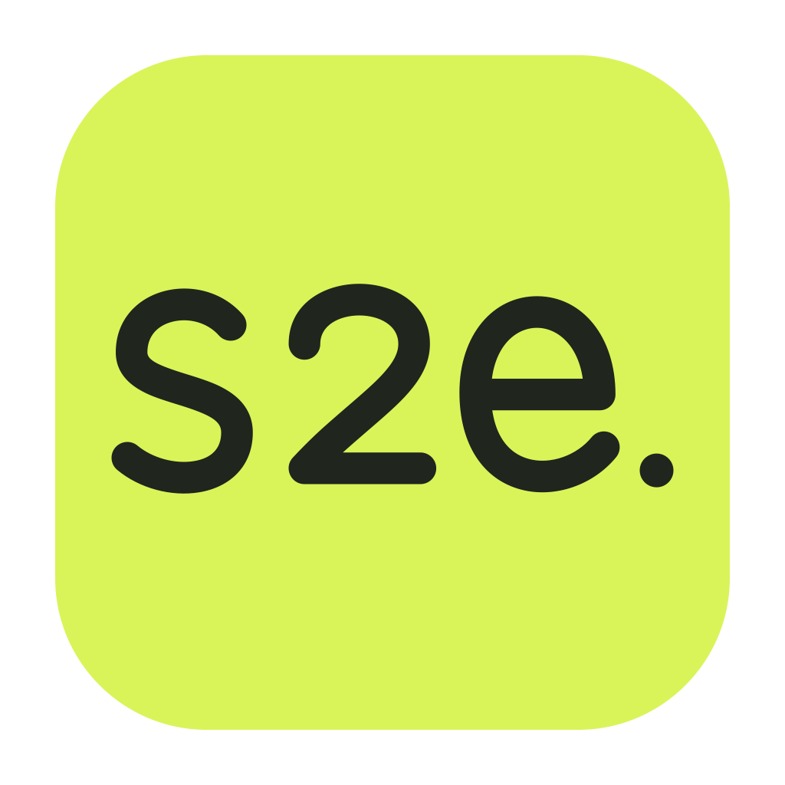
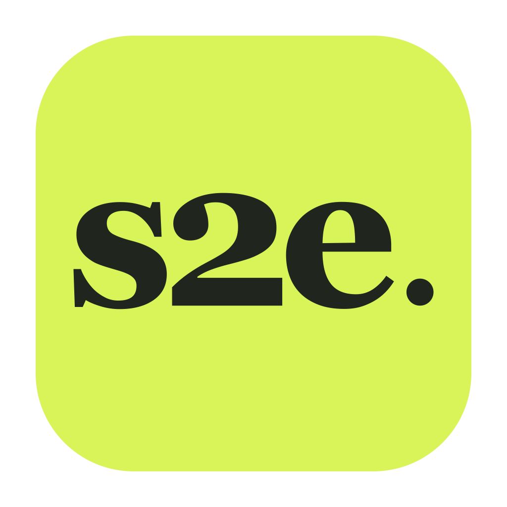

Scan2Ebook / 字标与应用图标
把 s2e. 留下来。
浅色
深色
A
延续
推荐
保留原来的识别感，校准字距与圆点。
Scan2Ebook
侧栏中的实际尺寸
浅色 / 深色 / 小图标
Scan2Ebook
32
16
SVG 字标 ↗
SVG 图标 ↗
B
圆润
重新绘制圆角字形，读起来更轻松。

Scan2Ebook
侧栏中的实际尺寸
浅色 / 深色 / 小图标
Scan2Ebook
32
16
SVG 字标 ↗
SVG 图标 ↗
C
书卷
换成有衬线的字形，接近书刊的气质。

Scan2Ebook
侧栏中的实际尺寸
浅色 / 深色 / 小图标
Scan2Ebook
32
16
SVG 字标 ↗
SVG 图标 ↗